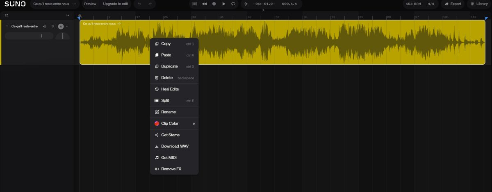
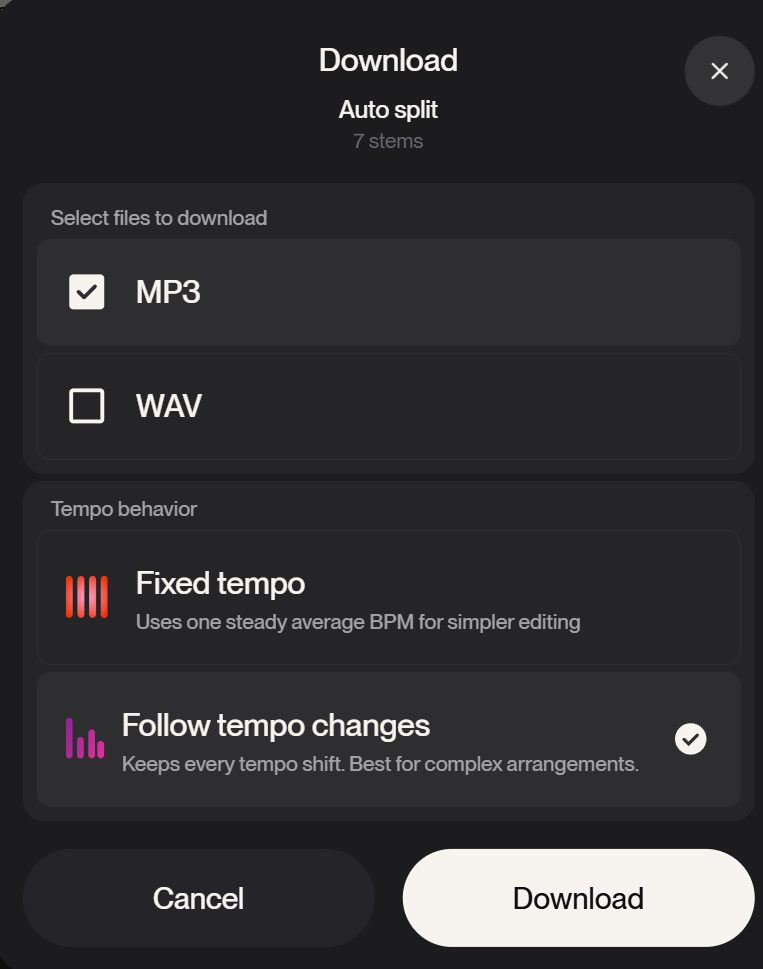
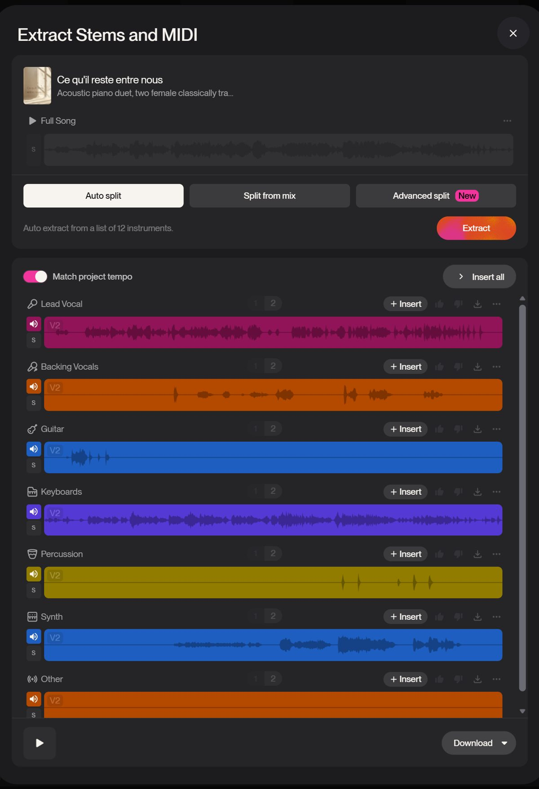
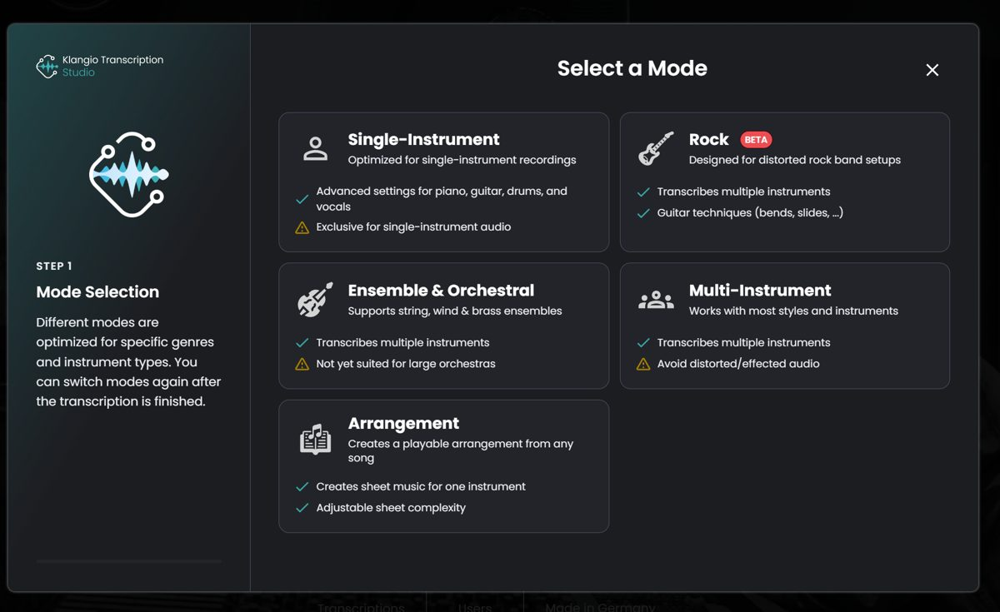
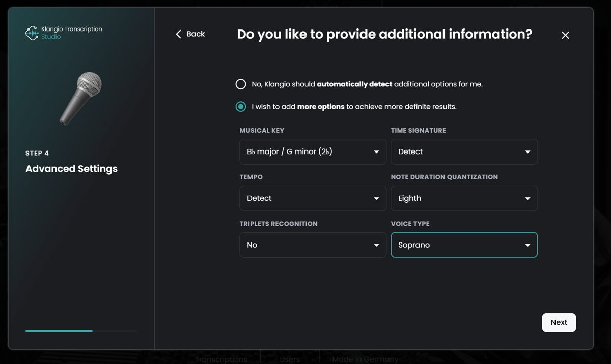
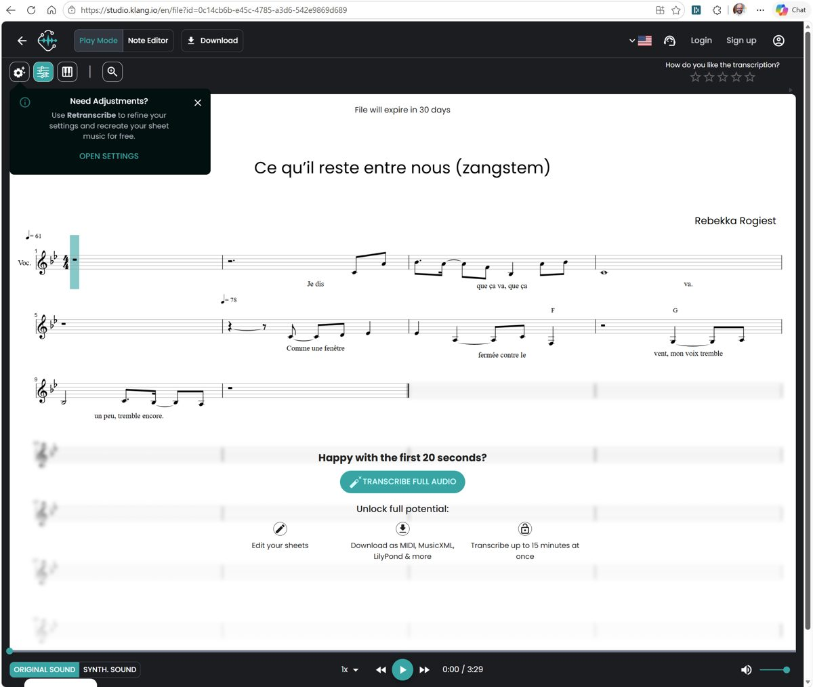

Hoe een stuk dat je in Suno maakte, een echte partituur wordt die zangeressen en muzikanten live kunnen uitvoeren. Stap voor stap, met de instellingen die we bij Ce qu'il reste entre nous uitprobeerden.
Wat staat erin
Het grote plaatje: alle stappen in één schema
Componeren in Suno, zo dat de partituur later beter wordt
Exporteren uit Suno
Noten maken met Klangio
Wat Claude daarna doet, en wat je aanlevert
Controleren, repeteren en uitvoeren
Rechten: Suno en SABAM
Verder werken met AI (de zip)
Spiekbriefje
Waar dit eerste stuk nu staat
Bij deze PDF hoort een zip-bestand. Daarin staat alles wat een AI (Claude, of eventueel ChatGPT) nodig heeft om verder te werken: een briefing, de werknotities, de scripts en de testresultaten. Hoe je die gebruikt, lees je in hoofdstuk 8.
Opgesteld door Olivier met Claude.
Hoofdstuk 1
Het grote plaatje
Een partituur ontstaat in zes stappen. Elke stap heeft een eigenaar. De kleur toont wie wat doet.
RebekkaKlangioClaudeMusici & dirigent
1
RebekkaComponeren in Suno Het stuk maken, liefst in Suno Studio met eigen noten (MIDI) als vertrekpunt.
Resultaat: een afgewerkt nummer + de tekst + de prompts
2
RebekkaExporteren uit Suno Het nummer opsplitsen in sporen (Advanced split) en alles als WAV downloaden.
Resultaat: één zip met het volledige nummer + een WAV per stem/instrument
Resultaat: per spoor een MusicXML- en MIDI-bestand
4
ClaudeSamenvoegen, verbeteren, arrangeren Eén gemeenschappelijk maatraster, fouten eruit, originele tekst erin, zangpartijen S1/S2/A, de instrumenten verdelen (piano, harp, viool, cello, percussie), alles controleren.
Resultaat: volledige partituur, partijen per muzikant (PDF), MusicXML, playback
5
RebekkaDirigentBeluisteren en beslissen De playback naast het origineel leggen. Klopt het? Welk instrument draagt welke melodie? Aanpassingen gaan terug naar stap 4.
Resultaat: een goedgekeurde versie
6
MusiciNalezen, repeteren, uitvoeren Een musicus die niet aan de partituur werkte, leest na. De zangeressen krijgen per stem een repetitie-MP3.
Resultaat: concertklare partijen
De kern in één zin: Suno levert de klank, Klangio de ruwe noten, Claude maakt er een partituur van, en mensen beslissen of het klopt.
Hoofdstuk 2 · Rebekka
Componeren in Suno
Hoe je in Suno werkt, bepaalt hoe goed de partituur later wordt. Suno maakt audio, geen noten. Alles wat later "uit de audio geraden" moet worden, is een bron van fouten.
Pro of Premier: wat is het verschil voor jou?
Pro
Premier (met Studio)
Werkwijze
Prompt geven, kiezen uit wat Suno maakt
Zelf meecomponeren op een tijdlijn met sporen
Per deel herwerken
Beperkt
Alleen het middenstuk opnieuw laten maken
Lagen toevoegen
Nee
Bv. cello of harp onder een a-cappellastuk
Eigen noten (MIDI)
Nee
Melodie of akkoorden zelf ingeven of inspelen
Opsplitsen
Auto split, Split from mix
+ Advanced split (zelf kiezen uit ~100 instrumenten)
MIDI-export
Nee
Ja, voor instrumenten (niet voor zang)
Tips voor een stuk dat uitgevoerd moet worden
Begin met je eigen noten. Geef de melodie en de belangrijkste harmonieën zelf in als MIDI in Studio. Die noten bestaan dan al exact en hoeven later niet geraden te worden. Dat is de grootste kwaliteitswinst die er is.
Denk aan de echte bezetting. Vraag in je prompt om de instrumenten die je live zult hebben (bv. "piano, harp, violin, cello, light percussion, six female voices"). Wat Suno niet laat horen, moet later bedacht worden.
Hou de stemmen zingbaar. Vraag om duidelijke, afzonderlijke stemlijnen ("clear independent voice lines") in plaats van een vage koorklank.
Bewaar alles: de definitieve tekst, de prompts, de datum. Je hebt de tekst nodig voor de partituur, en de rest voor de rechten (hoofdstuk 7).
Een vast tempo maakt het makkelijker, maar is geen must. Vrije tempo's en tempowissels lukken ook, het kost alleen meer werk.
Nuance: componeer je een nieuw stuk in Studio door zelf noten in te geven, dan is Klangio (stap 3) voor die delen overbodig. Klangio is vooral nodig voor stukken die alleen als audio bestaan.
Hoofdstuk 3 · Rebekka
Exporteren uit Suno
Het doel: elk instrument en de zang als apart, onverkleind audiobestand.
Open het nummer in Suno Studio. Klik met de rechtermuisknop op de clip en kies Get Stems.
Kies Advanced split (Premier) en vink aan wat je hoort: zang/koor, piano, harp, viool, cello, percussie. Elke stem kost 10 credits. Met Pro kies je Auto split (50 credits).
Klik Extract één keer. Is de split al gebeurd, klik dan niet opnieuw op Extract: dat kost opnieuw credits en levert niets extra op.
Zet Match project tempo uit.
Klik Download, vink WAV én MIDI aan (MP3 mag uit) en kies Follow tempo changes (niet Fixed tempo).
"Unlock & continue" kost één download. Daarna zijn alle stems van dat nummer vrij.
Download ook het volledige nummer als WAV (via Download .WAV in het menu van de clip).

Rechtsklik op de clip in Studio: Get Stems, Download .WAV, Get MIDI

Download: vink WAV aan (hier staat MP3 nog aangevinkt) en laat "Follow tempo changes" staan

Het stems-venster: kies de split-modus bovenaan, zet "Match project tempo" uit
Belangrijkste ontdekking: met het vinkje MIDI levert Suno noten voor álle sporen, ook voor de zang, en alle MIDI-bestanden delen dezelfde tempokaart. Daardoor passen alle partijen meteen op één maatraster. Dit is de beste basis voor de partituur.
Hoofdstuk 4 · Klangio
Noten maken met Klangio
Sinds de MIDI-export van Suno is Klangio optioneel. Gebruik het als tweede mening, of voor stukken waarvan je geen Suno-MIDI hebt (bv. een oude opname).
Klangio Transcription Studio (studio.klang.io) zet audio om naar noten. Het werkt het best met één spoor per keer. Gratis zie je de eerste 20 seconden; met Pro (ongeveer €20 per maand, maandelijks opzegbaar) het hele stuk en de downloads.
Instellingen die we gebruikten (zangspoor)
Scherm
Keuze
Waarom
Mode
Single-Instrument
Het spoor bevat maar één soort klank
Instrument
Vocals (de microfoon)
"Soprano", "Alto" onderaan zijn saxofoons!
Lyrics
Yes, taal Français
Taal opgeven = betere tekstherkenning
Extra info
"I wish to add more options"
Dan kun je de toonsoort meegeven
Musical key
B♭ major / G minor (voor dit stuk)
Claude bepaalt de toonsoort per stuk
Time signature, Tempo
Detect
Bij een vrij tempo werkt raden beter dan een vast getal
Quantization
Eighth
Grover raster = leesbaarder ritme
Triplets
No
Anders verschijnen er valse triolen
Voice type
Soprano (of Alto voor een lage stem)
Title / Author
Titel van het stuk / Rebekka Rogiest
Komt op de partituur
Voor piano: Single-Instrument > Piano. Voor strijkers of meerdere stemmen in één spoor: Ensemble & Orchestral. Gebruik niet Arrangement: dat maakt een vereenvoudigde speelversie.

Kies de modus

De extra instellingen
Hoofdstuk 4 · vervolg
Wat Klangio oplevert

Eerste test: 20 seconden zangstem van Ce qu'il reste entre nous
Goed
Leesbaar ritme
Tempowissel herkend (61 naar 78)
Franse tekst grotendeels juist
Akkoordsymbolen
Nog te verbeteren
Tekstfoutjes ("mon voix")
Enkele noten een octaaf te laag
Vreemde rust in maat 6
Na de transcriptie
Luister met Synth sound (wat er op papier staat) en wissel af met Original sound.
Klik Download en kies MusicXML én MIDI.
Herhaal voor elk spoor (zang, piano, ...). Geef de bestanden een duidelijke naam, bv. zang.musicxml, piano.musicxml.
Klangio-bestanden verlopen na 30 dagen. Download meteen wat je nodig hebt.
Hoofdstuk 5 · Claude
Wat Claude daarna doet
Klangio levert de grondstof. Een partituur voor een ensemble vraagt nog zeven stappen:
#
Stap
Waarom
1
Eén maatraster
Klangio bepaalt per spoor zelf tempo en maten. Zonder gemeenschappelijk raster speelt het ensemble niet samen.
2
Fouten verbeteren
Octaaffouten, vreemde rusten, de originele tekst in plaats van de geraden tekst.
3
Zangpartijen
Uit één of twee gezongen lijnen drie zingbare partijen maken (S1, S2, A), binnen het bereik.
4
Arrangeren
Wat piano en synth spelen verdelen over piano, harp, viool, cello en percussie. Harppedalen uitschrijven.
5
Controle
Een script controleert bereik per stem, maatlengtes en onspeelbare passages.
6
Uitschrijven
Volledige partituur, partijen per muzikant (PDF), MusicXML, playback, repetitie-MP3's.
7
Herbruikbaar maken
Elk volgend stuk volgt dezelfde route, sneller.
Wat je aan Claude aanlevert (per stuk)
Het volledige nummer als WAV
De stems als WAV (zip)
De MIDI-bestanden uit Suno (en eventueel Klangio-bestanden)
De definitieve tekst (als tekstbestand of gewoon geplakt)
Eventuele wensen: welk instrument draagt welke melodie, waar mag het eenvoudiger
Wat AI niet kan: echt luisteren. Claude meet en vergelijkt audio, maar kan niet oordelen of iets mooi of zingbaar klinkt. Daarom blijven stap 5 en 6 uit het schema mensenwerk.
Hoofdstuk 6 · RebekkaMusici
Controleren, repeteren, uitvoeren
Beluisteren
Leg de playback van de partituur naast je originele Suno-nummer, deel per deel. Noteer per maatnummer wat niet klopt ("maat 23: melodie te laag", "maat 40: harp te druk") en geef dat terug aan Claude.
Nalezen
Laat een musicus die niet aan de partituur werkte alles nalezen voor het naar de muzikanten gaat. Voor een concert in een grotere zaal is dat geen luxe. Ter indicatie: een professionele kopiist rekent per pagina; voor een stuk van deze omvang reken op enkele honderden tot ongeveer €1.500. Vraag lokaal een offerte.
Afwerken
Kleine visuele aanpassingen (een notenbalk verschuiven, een bladomslag) doe je het makkelijkst in MuseScore 4 (gratis) met het MusicXML-bestand. Dorico is het professionele alternatief.
Repeteren
Elke zangeres krijgt een MP3 van het hele stuk waarin haar eigen stem luider klinkt. Dat is het formaat dat koeruitgevers ook gebruiken, en het komt rechtstreeks uit de partituur.
Een ander ensemble?
De partituur is een "master". Een koor van 35 zingt dezelfde drie stemmen met meer mensen per stem: dat is bijna gratis. A cappella of een groter orkest is herarrangeren, telkens vanuit dezelfde master.
Hoofdstuk 7
Rechten: Suno en SABAM
Suno. Met een betalend abonnement (Pro of Premier) mag je de stukken commercieel gebruiken, ook in een concert. Suno garandeert niet dat er auteursrecht op de output rust. Maak en download stukken dus altijd terwijl je een betalend abonnement hebt.
SABAM. Registreer het werk in MyWorx en geef aan hoe AI gebruikt werd. Er zijn drie categorieën:
AI als assistent: volledig beschermd.
AI als component: alleen het menselijke deel is beschermd.
Volledig door AI gemaakt: niet beschermd.
Je eigen tekst, eigen melodieën en het arrangement zijn je menselijke inbreng. SABAM controleert niet zelf; de verantwoordelijkheid ligt bij de auteur. Bij twijfel over de juiste categorie: vraag het SABAM rechtstreeks.
Bewaar je bewijs: prompts, eigen tekst, MIDI die je zelf ingaf, stems en downloaddata. Hoe meer eigen inbreng aantoonbaar is, hoe sterker je staat.
Dit is algemene informatie, geen juridisch advies. Regels rond AI en auteursrecht veranderen snel.
Hoofdstuk 8
Verder werken met AI (de zip)
De zip bevat alles wat een AI nodig heeft om dit project op te pikken:
Bestand
Wat
00_LEES_MIJ_EERST.md
Korte uitleg voor jou
01_AI_BRIEFING.md
De instructies voor de AI: doel, werkwijze, stand van zaken, wat ze moet vragen
02_WERKNOTITIES.md
Alle beslissingen en instellingen van vandaag
Handleiding PDF
Dit document
project/
Analyse en status van Ce qu'il reste entre nous
scripts/
De Python-scripts die Claude gebruikte
voorbeelden/
De eerste testresultaten (MIDI, proefblad)
Zo gebruik je het
Open een nieuw gesprek in Claude (claude.ai) of ChatGPT.
Sleep de zip in het gesprek, samen met de bestanden van je nieuwe stuk.
Typ: "Lees eerst 01_AI_BRIEFING.md en help me verder met dit stuk."
Wat je mag verwachten
Claude kan de scripts uitvoeren en het volledige werk doen (stap 4), mits de omgeving code toelaat. Het werkt het best in een Claude-omgeving waarin het software kan installeren.
ChatGPT kan de handleiding lezen, vragen beantwoorden en je begeleiden in Suno en Klangio. De verwerking zelf (audio naar noten, partituur zetten) zal er waarschijnlijk niet lukken, omdat de nodige software daar meestal niet geïnstalleerd kan worden.
Partituur, 8 partijen, playback, vergelijking en repetitietracks automatisch gemaakt; nog niet nagelezen
Analyse
Bes groot / g klein; vrij tempo; zang 68 % van de klank, piano 14 %, synth 9 %, backing vocals 6,5 %
Klangio-test
20 seconden zang: veelbelovend
Volgende stap
Rebekka beluistert de vergelijking (links origineel, rechts partituur) en geeft per maat feedback; daarna arrangeerkeuzes voor harp, viool, cello en percussie
Bezetting voor de eerste uitvoering
Elf op het podium: zes zangeressen (sopraan 1, sopraan 2, alt, elk dubbel bezet) en piano, harp, viool, cello, percussie.
Opgelet bij dit stuk
De automatische split kent geen harp, viool of cello. Die klinken hier vooral als "synth" en "keyboard". De harp-, viool- en cellopartijen worden dus deels gearrangeerd, niet alleen overgeschreven.
Het origineel is "SSA & piano": drie vrouwenstemmen met piano, plus een zachte strijkerslaag in het middenstuk. Harp en percussie zitten er niet in en worden er dus bij gearrangeerd; viool en cello deels.